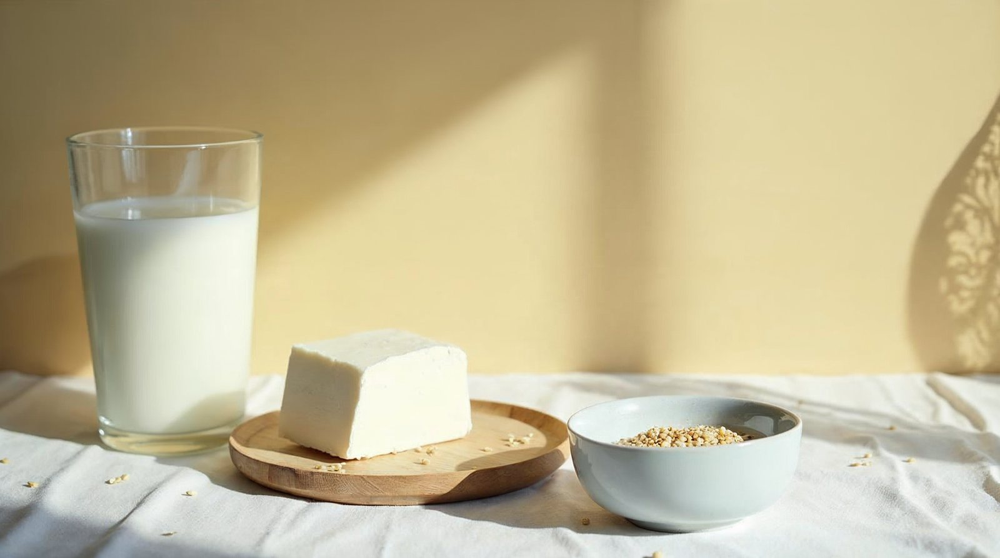

이종호 한의사 감수좋은꿈참사랑한의원 대표원장 (한의사 면허번호 19769)발행 2026-11-23 · 수정 2026-11-27
이 글의 차례
- 왜 이런 불편이 생길 수 있나요
- 뼈가 약해지면 생활에서는 어떤 일이 생길 수 있나요?
- 먼저 이렇게 여쭙니다
- 일상에서 먼저 해 볼 수 있는 것
- 근력과 균형은 왜 뼈만큼 중요할까요?
- 식사는 이렇게 챙겨 보세요
- 자주 하는 오해
- 집 안 넘어짐, 이렇게 점검해 보세요
- 운동을 거의 해 본 적이 없다면 어떻게 시작할까요?
- 밤잠과 열감도 뼈 건강과 이어져 있을까요?
- 가족은 어떻게 도와줄 수 있을까요?
- 한의원에서 함께 살필 수 있는 경우
- 언제 검사를 받고 언제 바로 진료가 필요할까요
- 이런 경우를 예로 들 수 있습니다
- 스스로 점검해 보세요
- 처음 오시면 이렇게 진행됩니다
- 이렇게 기록해 오시면 상담이 쉬워집니다
- 이런 증상은 먼저 확인이 필요합니다
- 관련 글
건강검진 결과지를 받아 든 날, 골밀도 칸에 낯선 숫자와 함께 "추적 관찰"이라는 말이 적혀 있어요. 허리가 아픈 것도 아니고 키가 줄었다는 느낌도 없었는데, 뼈가 약해지고 있다는 설명을 듣고 나니 계단을 내려갈 때마다 발밑이 신경 쓰이시죠.
진료실에서도 이 숫자 하나로 걱정을 시작하셨다는 분을 자주 만나요. 무엇을 먹어야 하는지, 운동은 해도 되는지, 약은 언제부터인지 물을 곳은 많은데, 정작 생활에서 무엇부터 바꿔야 할지는 막막하다고 하시거든요. 그 마음 충분히 이해합니다.
먼저 안심하셔도 되는 게 하나 있어요. 폐경 뒤에 뼈가 약해지는 건 몸이 때가 돼서 겪는 자연스러운 변화예요. 여성호르몬이 줄면서 뼈가 빠르게 약해질 수 있다고 알려져 있고, 이 무렵 많은 분이 같은 숫자를 받아 드세요. 겁부터 내실 일은 아닙니다.
다만 저는 두 가지를 나눠서 말씀드려요. '뼈가 약해지는 것'과 '뼈를 다치는 것'은 다른 얘기거든요. 뼈가 약해져도 처음에는 아무 느낌이 없는 경우가 많아요. 그래서 골밀도 검사로 지금 상태를 알고, 식사·운동·넘어짐 예방을 미리 챙겨 두는 게 중요한 거예요.
진단과 약은 해당 진료과를 따르시면 되고요, 저는 그 곁에서 근력과 잠, 식사 같은 생활을 함께 살펴요. 이 글에서는 생활에서 챙길 것들을 순서대로 정리해 보았습니다.
왜 이런 불편이 생길 수 있나요
- 폐경으로 여성호르몬이 줄면 뼈가 만들어지는 속도보다 빠져나가는 속도가 빨라질 수 있습니다.
- 활동이 줄고 근력이 약해지면 뼈에 주는 자극도 줄어듭니다.
- 칼슘과 비타민 D가 부족한 식사, 햇빛을 거의 쬐지 않는 생활과 관련될 수 있습니다.
- 흡연과 음주, 일부 약(스테로이드 등)도 영향을 줄 수 있습니다.
뼈가 약해지면 생활에서는 어떤 일이 생길 수 있나요?
뼈가 약해지는 것 자체는 대개 아프지 않습니다. 그래서 많은 분이 별일 없이 지내다가, 가볍게 넘어지거나 무거운 것을 들다가 뼈에 금이 가고 나서야 알게 됩니다. 특히 손목과 등뼈, 엉덩이 쪽 뼈가 약해지기 쉬운 자리로 알려져 있습니다.
등뼈가 조금씩 눌리면 아픔 없이 키가 줄거나 등이 앞으로 굽어 보이기도 합니다. 예전보다 바지 길이가 길게 느껴지거나, 가족에게서 등이 굽었다는 말을 들었다면 다음 검사 때 그 이야기를 꼭 함께 전해 주세요.
그래서 저는 폐경 뒤 뼈 건강을 '아픈 곳을 치료하는 일'보다 '넘어지지 않고, 넘어져도 덜 다치는 몸을 만드는 일'로 설명드립니다. 검사로 지금 상태를 알고, 근력과 균형, 식사와 생활을 함께 챙기는 것이 그 바탕입니다.
먼저 이렇게 여쭙니다
- 폐경은 언제였고 골밀도 검사를 받으신 적이 있나요?
- 키가 줄었거나 등이 굽었나요?
- 넘어진 적이나 허리를 삐끗한 적이 있나요?
- 복용 중인 약이 있나요? (골다공증 약, 스테로이드 등)
- 하루에 바깥에서 걷는 시간은 어느 정도이고, 계단은 편하게 오르내리시나요?
- 끼니마다 달걀·두부·생선 같은 반찬을 곁들여 드시나요?

일상에서 먼저 해 볼 수 있는 것
- 걷기와 계단 오르기처럼 체중을 싣는 운동하기
- 칼슘이 든 음식(우유, 멸치, 두부, 녹색 채소) 챙기기
- 칼슘·비타민 D 영양제를 따로 먹을지, 얼마나 먹을지는 주치의와 상의하기
- 낮에 잠깐씩 햇빛 쬐기
- 금연하고 음주 줄이기
- 욕실 미끄럼 방지 매트, 밤길 조명처럼 넘어지지 않게 집 안 정리하기
근력과 균형은 왜 뼈만큼 중요할까요?
뼈가 조금 약하더라도 넘어지지 않으면 크게 다칠 일이 줄어듭니다. 그런데 폐경 무렵부터는 다리 근육과 균형 감각도 함께 떨어지기 쉬워, 문턱에 발이 걸리거나 계단에서 휘청하는 일이 늘었다는 분이 많습니다.
집에서도 할 수 있는 동작부터 시작해 보세요. 식탁이나 벽처럼 잡을 곳이 있는 자리에서 하고, 무릎이나 허리가 불편해지면 그날은 쉬어 갑니다.
- 의자에 앉았다가 팔을 짚지 않고 천천히 일어서기를 다섯 번에서 열 번
- 식탁을 잡고 발뒤꿈치를 들었다 내리기를 열 번
- 식탁을 잡은 채 한쪽 다리로 서서 열까지 세고 다리 바꾸기
- 벽을 등지고 서서 뒤통수와 등, 엉덩이를 벽에 붙이고 숨 고르기
처음부터 많이 하기보다 매일 같은 시간에 조금씩 이어 가는 것이 오래갑니다. 걷기와 함께 이런 동작을 일주일에 몇 번 묶어 두면, 의자에서 일어서는 동작이 달라졌는지 스스로도 느끼기 쉽습니다. 동작을 하는 동안 숨을 참지 말고 천천히 내쉬며 하는 것도 잊지 마세요.
식사는 이렇게 챙겨 보세요
뼈를 위해 우유만 챙기는 분이 많지만, 뼈와 근육에는 칼슘과 함께 단백질도 필요합니다. 끼니마다 달걀, 두부, 생선, 살코기 가운데 하나를 곁들이고, 멸치나 뼈째 먹는 생선, 녹색 채소를 반찬으로 자주 올려 보세요.
우유가 속에 맞지 않는 분은 요구르트나 치즈, 두유처럼 다른 모양으로 바꿔 볼 수 있습니다. 국과 찌개를 짜게 드시거나 커피를 하루 여러 잔 드신다면 조금씩 줄여 보는 것도 함께 권합니다.
입맛이 떨어져 끼니를 대충 넘기는 날이 많다면 그것부터 이야기해 주세요. 잘 먹는 것은 뼈 건강의 바탕이기도 해서, 소화와 입맛을 함께 살피는 경우가 많습니다.
자주 하는 오해
- 아픈 곳이 없으니 뼈도 괜찮을 것이라고 여기기 쉽지만, 뼈가 약해지는 동안에는 대개 아무 느낌이 없어 검사로 확인하는 것이 먼저입니다.
- 뼈가 약하다는 말을 들으면 다칠까 봐 움직임을 줄이는 분이 있지만, 잡을 곳을 두고 천천히 하는 걷기와 근력 운동은 넘어짐을 줄이는 데 도움이 될 수 있습니다.
- 영양제를 여러 가지 먹으면 그만큼 좋다고 생각하기 쉽지만, 성분이 겹칠 수 있어 드시는 것을 모두 적어 주치의나 약사와 상의해 주세요.
집 안 넘어짐, 이렇게 점검해 보세요
넘어짐은 대개 익숙한 집 안에서 일어납니다. 한 번 날을 잡아 집을 한 바퀴 돌며 아래 항목을 살펴보세요.
- 거실과 방 사이 문턱, 바닥에 놓인 전선과 작은 깔개에 발이 걸리지 않는지
- 변기와 욕조 옆처럼 앉았다 일어서는 자리에 잡을 곳이 있는지
- 자주 쓰는 물건이 허리를 깊이 숙이거나 의자에 올라가야 닿는 곳에 있지 않은지
- 집에서 신는 슬리퍼가 헐겁거나 바닥이 미끄럽지 않은지
점검은 혼자보다 가족과 함께 하면 놓치는 곳이 줄어듭니다. 매일 다니는 사람에게는 익숙해서 보이지 않던 문턱과 깔개가, 다른 사람 눈에는 먼저 띄는 경우가 많습니다.
운동을 거의 해 본 적이 없다면 어떻게 시작할까요?
걷기가 좋다는 말을 듣고 첫날부터 한 시간을 걸었다가 무릎이 시큰해져 일주일을 쉬었다는 분이 있습니다. 처음에는 평지에서 10분, 몸이 괜찮으면 다음 주에 5분씩 늘리는 정도로 천천히 시작해 보세요.
평지 걷기가 편해지면 완만한 오르막이나 계단 몇 층을 섞어 뼈에 조금 더 자극을 줄 수 있습니다. 바닥이 너무 얇거나 딱딱한 신발보다 발을 잘 감싸는 운동화를 신고, 비나 눈이 와 길이 미끄러운 날은 실내에서 의자 운동으로 대신합니다.
걸은 날과 시간을 달력에 표시해 두면 꾸준히 이어 가기가 쉽고, 진료 때 보여 주시면 다음 단계를 함께 정하기에도 좋습니다. 걷고 난 다음 날 무릎이나 발뒤꿈치가 붓거나 아프다면 양을 줄이고 그 이야기를 전해 주세요.
밤잠과 열감도 뼈 건강과 이어져 있을까요?
폐경 무렵에는 밤에 열이 오르고 땀이 나서 자주 깨는 분이 많습니다. 잠이 조각나면 낮에 몸이 무겁고 기운이 없어 걷기와 운동을 미루게 되고, 다리 힘이 떨어지면 다시 넘어짐이 걱정되는 흐름이 이어지기 쉽습니다.
그래서 뼈 이야기를 하러 오신 분께도 저는 잠을 함께 여쭙니다. 잠든 시각과 깬 횟수, 깬 뒤 다시 잠드는 데 걸리는 시간을 적어 오시면, 걷기 계획을 어느 시간대에 두면 좋을지 정하는 데 도움이 됩니다. 밤에 땀이 나서 깨는 날이 많다면 침실 온도와 이불 두께부터 조금씩 바꿔 보세요.
가족은 어떻게 도와줄 수 있을까요?
뼈 건강은 하루 이틀에 달라지는 일이 아니라 오래 이어 가야 하는 일이라, 곁에서 함께해 주는 사람이 있으면 훨씬 수월합니다. 주말에 함께 걷는 시간을 정해 두거나, 장을 볼 때 두부와 생선, 채소를 같이 골라 주는 것만으로도 큰 힘이 됩니다.
골밀도 검사 날짜와 다음 검사 시기를 가족 달력에 함께 적어 두는 것도 좋습니다. 높은 곳의 물건을 내리거나 무거운 짐을 옮기는 일은 가족이 먼저 나서 주시고, 넘어질 뻔한 일이 있었다면 숨기지 말고 이야기할 수 있는 분위기를 만들어 주세요.

한의원에서 함께 살필 수 있는 경우
- 허리나 무릎이 쉽게 시큰거리고 기운이 떨어진 경우 근력과 생활 습관을 함께 살핍니다.
- 걷기가 힘들고 자주 피곤한 경우 움직임과 몸의 균형을 함께 살핍니다.
- 밤에 쉽게 깨고 잠이 얕은 경우 수면 리듬을 함께 살핍니다.
좋은꿈참사랑한의원에서는 모든 분의 맥을 먼저 짚고, 폐경 뒤 달라진 몸의 이야기와 검사 결과를 들으며, 필요하다고 판단될 때 설진·복진과 인바디 770을 더해 근육량을 함께 살핍니다. 그 뒤 근력과 생활 계획, 침·한약 상담 등을 상태에 맞춰 정하며, 골밀도 진단과 약은 해당 진료과에서 받도록 안내합니다.
언제 검사를 받고 언제 바로 진료가 필요할까요
- 폐경 뒤 골밀도 검사를 받아 본 적이 없다면, 증상이 없더라도 정형외과·내과·산부인과 같은 의과나 건강검진기관에 검사 시기를 상의해 보세요. 국가건강검진에 골밀도 검사가 포함되는 나이가 있어 대상인지 확인해 보시면 좋습니다.
- 이미 검사를 받았다면 다음 검사 시기를 담당 의사에게 확인해 적어 두세요.
- 허리나 무릎이 시큰한 정도이고 넘어진 일이 없다면, 걷기와 근력 운동을 조금씩 늘리며 2~4주 지켜볼 수 있습니다.
- 2~4주 생활을 조정해도 통증이 그대로이거나 걸을 수 있는 거리가 점점 줄어든다면 진료를 받아 보시길 권합니다.
- 넘어진 뒤 갑자기 심하게 아픈 경우처럼 바로 진료가 필요한 신호는 아래 '이런 증상은 먼저 확인이 필요합니다'에 모아 두었습니다.
이런 경우를 예로 들 수 있습니다
- 예를 들어 건강검진에서 뼈가 약해지기 시작했다는 설명을 듣고 걱정이 되어 운동을 갑자기 크게 늘린 경우, 무릎이나 발뒤꿈치에 부담이 갈 수 있어 지금 할 수 있는 걷기 시간부터 정해 조금씩 늘려 가는 방법을 함께 정리합니다.
- 예를 들어 밤에 땀이 나 자주 깨고 새벽에 화장실에 가다 어지러웠던 경우, 넘어질 위험과 잠을 함께 살피며 밤길 조명과 일어서는 속도를 함께 점검합니다.
- 예를 들어 골다공증 약을 먹으면서 영양제를 여러 가지 더 챙기고 있는 경우, 성분이 겹치지 않는지 처방한 의사나 약사와 상의하시도록 권하고, 한약 상담이 필요하면 복용 중인 약 목록을 먼저 확인합니다.
스스로 점검해 보세요
- 폐경 뒤 골밀도 검사를 받은 적이 없거나 결과를 모른다
- 예전보다 키가 줄었다는 말을 들었다
- 하루 걷는 시간이 30분이 안 되는 날이 많다
- 우유·두부·멸치·녹색 채소를 거의 먹지 않는다
- 낮에 바깥 햇빛을 쬐는 시간이 거의 없다
- 최근 1년 사이 넘어지거나 넘어질 뻔한 적이 있다
- 의자에서 팔을 짚지 않고 일어나기 어렵다
이 목록으로 뼈 상태를 알 수는 없습니다. 해당 항목이 많다면 골밀도 검사 여부를 해당 진료과와 상의하고, 생활에서 바꿀 점을 정리하는 데 참고해 주세요.
처음 오시면 이렇게 진행됩니다
접수 때 골밀도 검사 결과지와 복용 중인 약·영양제 목록을 가져오시면 좋습니다. 원장이 모든 분의 맥을 먼저 짚고, 폐경 시기와 그 뒤 달라진 몸의 이야기, 넘어진 적이 있는지를 여쭈며, 필요하다고 판단될 때 설진·복진을 더합니다.
근육량을 함께 볼 필요가 있다고 판단되면 인바디 770으로 측정하고, 걷는 모습과 의자에서 일어서는 동작, 한쪽 다리로 서는 균형을 확인합니다. 그 뒤 오늘 진행할 내용과 이유를 설명드리고, 근력·식사·햇빛·넘어짐 예방을 묶은 생활 계획과 다음 방문 간격을 정합니다.
골밀도 진단이나 약 처방이 필요해 보이면 해당 진료과 진료를 안내하며, 한의원 진료가 이를 대신하지는 않습니다.
이렇게 기록해 오시면 상담이 쉬워집니다
뼈는 날마다 달라지는 게 아니라서, 기억만으로는 지난 1~2년의 변화를 떠올리기 어려워요. 원래 그래요. 아래 몇 가지만 적어 오시면 지금 어디쯤인지 같이 보기가 훨씬 쉬워지거든요.
- 골밀도 검사 결과와 검사한 날
- 최근 1~2년 사이 키의 변화
- 넘어진 적이 있다면 날짜와 상황
- 복용 중인 약과 영양제
근력과 생활을 살피는 일은 제 몫으로 가져갈게요. 여기에 한 가지만 보태 주시면 돼요. 하루에 한 번, 식탁을 옆에 두고 의자에서 팔을 짚지 않고 천천히 일어서 보세요. 몇 번이 되는지는 그날 몸에 맞추시면 되고, 딴 건 지금처럼 편하게 하셔도 괜찮아요.
센 운동을 한 번 하는 것보다 약하게라도 매일 이어 가는 게 다리 힘을 지키는 데는 더 오래가요. 처음엔 다섯 번도 버겁게 느껴질 수 있어요. 그래도 그게 정상이에요. 하다 보면 일어서는 동작이 조금씩 가벼워지는 걸 스스로 느끼시는 분들이 많습니다.
뼈가 약해졌다는 말에 마음이 무거우셨을 거예요. 혼자 걱정하시기보다 검사지 한 장 들고 오셔서 같이 들여다보시죠. 궁금한 건 그냥 편하게 물어보세요. 넘어지지 않고 오래 잘 걷는 몸을 함께 챙겨 보겠습니다.
이런 증상은 먼저 확인이 필요합니다
- 넘어진 뒤 허리나 엉덩이, 손목이 갑자기 심하게 아픈 경우
- 넘어진 뒤 일어서기 어렵거나 다리에 체중을 싣기 힘든 경우
이런 신호가 있으면 한의원보다 가까운 병원이나 응급실을 먼저 찾으세요.
관련 글
- 갱년기에 밤마다 땀에 젖어 깨는 날이 많을 때는 어떻게 하나요?
- 체중은 정상인데 인바디에서 근육량이 적게 나왔어요
- 70대 어르신 집의 욕실과 현관은 낙상을 줄이려면 어떻게 점검하나요?

여쭙는 것
- 폐경은 언제였고 골밀도 검사를 받으신 적이 있나요?
- 키가 줄었거나 등이 굽었나요?
- 넘어진 적이나 허리를 삐끗한 적이 있나요?
생활에서 해 볼 것
- 걷기와 계단 오르기처럼 체중을 싣는 운동하기
- 칼슘이 든 음식(우유, 멸치, 두부, 녹색 채소) 챙기기
- 칼슘·비타민 D 영양제를 따로 먹을지, 얼마나 먹을지는 주치의와 상의하기
한의원에서 함께 살필 것
- 허리나 무릎이 쉽게 시큰거리고 기운이 떨어진 경우 근력과 생활 습관을 함께 살핍니다.
- 걷기가 힘들고 자주 피곤한 경우 움직임과 몸의 균형을 함께 살핍니다.
- 밤에 쉽게 깨고 잠이 얕은 경우 수면 리듬을 함께 살핍니다.
먼저 확인이 필요한 신호
- 넘어진 뒤 허리나 엉덩이, 손목이 갑자기 심하게 아픈 경우
- 넘어진 뒤 일어서기 어렵거나 다리에 체중을 싣기 힘든 경우
한눈에 보는 표
| 구분 | 핵심 |
|---|---|
| 여쭙는 것 | 폐경은 언제였고 골밀도 검사를 받으신 적이 있나요? 키가 줄었거나 등이 굽었나요? |
| 생활에서 해 볼 것 | 걷기와 계단 오르기처럼 체중을 싣는 운동하기 칼슘이 든 음식(우유, 멸치, 두부, 녹색 채소) 챙기기 |
| 한의원에서 함께 살필 것 | 허리나 무릎이 쉽게 시큰거리고 기운이 떨어진 경우 근력과 생활 습관을 함께 살핍니다. 걷기가 힘들고 자주 피곤한 경우 움직임과 몸의 균형을 함께 살핍니다. |
| 먼저 확인이 필요한 신호 | 넘어진 뒤 허리나 엉덩이, 손목이 갑자기 심하게 아픈 경우 넘어진 뒤 일어서기 어렵거나 다리에 체중을 싣기 힘든 경우 |
자주 묻는 질문
골밀도 검사는 어디서 하나요?
정형외과·내과·산부인과 같은 의과나 건강검진기관에서 받을 수 있습니다.
한의원에서는 어떻게 살피나요?
통증과 자세, 활동, 식사, 잠을 함께 묻고 필요하면 병원 검사를 안내합니다.
골다공증 약을 먹고 있어요.
약은 임의로 끊거나 줄이지 말고 처방한 의사와 상의하세요. 함께 먹는 영양제도 알려 주세요.
좋은꿈참사랑한의원은 재진 때 지난번 이야기부터 이어서 여쭙니다. 진료시간과 예약은 오시는 길에서 확인하세요.
어디서 상담받을 수 있나요?
좋은꿈참사랑한의원은 서울 동작구 만양로2길 2 신성빌딩 3층·5층(서울 동작구 상도동, 7호선 상도역 3번 출구 근처)에 있습니다. 한의사 3명(이종호 대표원장, 조영기 수석진료원장, 정원영 진료원장)이 진료합니다. 진료시간은 평일 09:30~20:00(점심 13:00~14:00), 토·일·공휴일 09:30~15:00이며, 방문 전 전화로 확인을 권합니다. 예약은 네이버 예약, 카카오톡 상담, 전화 02-815-7510로 받습니다.
이 글은 일반적인 건강 정보이며 개인의 진단이나 치료를 대신하지 않습니다. 증상이 있거나 복용 중인 약이 있다면 진료를 통해 확인하세요. 치료 효과는 개인마다 다를 수 있습니다.
작성 기준: 일반적으로 알려져 있는 건강 정보를 참고해 정리했습니다(대표원장 감수). 증상 기록은 1~2주 동안 하루 1회, 비슷한 시간에 적어 오시면 지난 상태와 비교하기 쉽습니다.